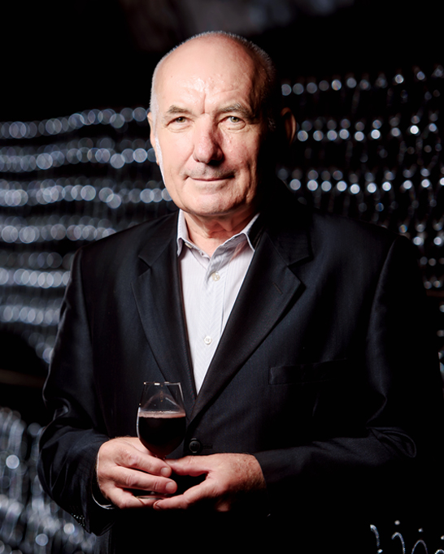

О КОМПАНИИ
Группа компаний «Абрау-Дюрсо» выпускает игристые вина, произведенные по классической технологии и методом Charmat, тихие вина, а также сидр, крепкие алкогольные напитки, безалкогольные газированные напитки и артезианскую воду.
Группа компаний «Абрау-Дюрсо» представляет коллекции виноделен: «Абрау-Дюрсо», «Винодельня Ведерниковъ» и «Лоза». В 2022 году совокупный объем продаж Группы компаний составил 54,171 млн бутылок.
«Абрау-Дюрсо» — самое титулованное винодельческое предприятие современной России. С 2011 года винами предприятия было завоевано более 176 наград международных дегустационных конкурсов. Среди них золотые медали старейших дегустационных состязаний мира: International Wine & Spirit Competition (IWSC), Decanter World Wine Awards, International Wine Challenge, Mundus Vini и Сhampagne & Sparkling Wine World Championships (CSWWC).
Особенная гордость «Абрау-Дюрсо» — достижения на крупнейшем международном конкурсе игристых и шампанских вин CSWWC. В 2021 году «Абрау-Дюрсо» стал чемпионом в номинации Rising Star («Восходящая звезда»), в которой эксперты ежегодно отмечают самого многообещающего производителя игристых и шампанских вин мира.
По итогам экспертного рейтинга Top100Wines 2022 «Абрау-Дюрсо» стал обладателем титула «Винодельня года».
СЕМЬЯ
Историю «Абрау-Дюрсо» пишут люди, влюбленные в этот дом. Все, кто прославил его, были очарованы магией места и посвятили ему жизнь. Шампанисты, виноделы, энологи — волшебники мира вина — создают лучшие образцы для коллекции «Абрау-Дюрсо». Каждый день они творят, как настоящие художники, плодом вдохновения которых становятся не картины на холсте или ноты в песне, а вино. Позвольте представить вам семью «Абрау-Дюрсо».
Георгий Федорович Непранов
Почти полвека Георгий Федорович создает шампанское. В 1978 году решением Совета министров РСФСР он был назначен главным шампанистом отдела винодельческой промышленности в Росглаввино. В 1986 году он пришел в «Абрау-Дюрсо» и стоял у истоков нового для хозяйства резервуарного метода производства. Сегодня Георгий Федорович руководит исторической винотекой «Абрау-Дюрсо».
Лидия Петровна Адигузелова

Лидия Петровна начала свою работу на посту заведующей лабораторией завода «Абрау-Дюрсо» 40 лет назад. Под ее руководством проводились опытные разработки, совершенствовались технологические процессы производства игристых вин. С 2012 года Лидия Петровна занимает должность советника, передает свой опыт молодым коллегам, учит их любить профессию и творчески относиться к делу.
Жорж Бланк

В 2016 году французского специалиста Жоржа Бланка, имевшего богатый опыт работы в Pommery, Lanson, Moët & Chandon, пригласили на должность главного энолога «Абрау-Дюрсо». Сегодня он курирует весь процесс виноделия — от сбора урожая и отбора поставщиков винограда до ассамбляжа классических игристых вин и вин по методу Шарма. Жорж Бланк — винодел в пятом поколении.
ИСТОРИЯ СОЗДАНИЯ
Происхождение названия:
Завод шампанских вин «Абрау-Дюрсо» получил свое название по имени местности, в которой он расположен. И хотя может показаться, что «Абрау» — французское название, на самом деле слово имеет черкесское происхождение и означает «обрыв». «Дюрсо» — название поселка, расположенного на берегу одноименной реки,в переводе с черкесского означает «четыре воды».
Природные условия «Абрау-Дюрсо» схожи со средиземноморскими, что дает возможность выращивать любые сорта винограда, произрастающие в Шампани.
Уникальное сочетание почвенных и климатических факторов этого небольшого уголка на юге России определило его будущее.
История предприятия:
Старейший российский завод шампанских вин был основан по приказу императора Александра II 25 ноября 1870 года. Вначале это было лишь имение, принадлежавшее царской семье.
Подъем производства начался, когда управляющим завода стал Лев Сергеевич Голицын.
Чтобы произвести первую партию шампанского, требовалось выполнить немалую подготовку. В качестве сырья был выбран довольно неприхотливый сорт германского винограда Рислинг, а для изготовления красного вина из Вены был завезен сорт Португизер.
В 1877 году было произведено первое вино. И хотя оно не являлось игристым и было изготовлено примитивным способом в небольшом количестве, его по достоинству оценили дегустаторы.
Хороший результат побудил управляющего дать приказ завезти в «Абрау-Дюрсо» разнообразные сорта винограда:Каберне, Совиньон, Пино-фран, Шардоне, Алиготе. Успех не заставил себя долго ждать. В 1882 году красные и белые вина заслужили наивысшие награды на московской выставке.
В наши дни «Абрау-Дюрсо» — старейший производитель шампанского в России, входит в пятерку крупнейших отечественных производителей игристых вин.Это предприятие, доказавшее, что в России можно изготовить игристое вино безупречного качества, практически ничем не уступающее винам Франции.